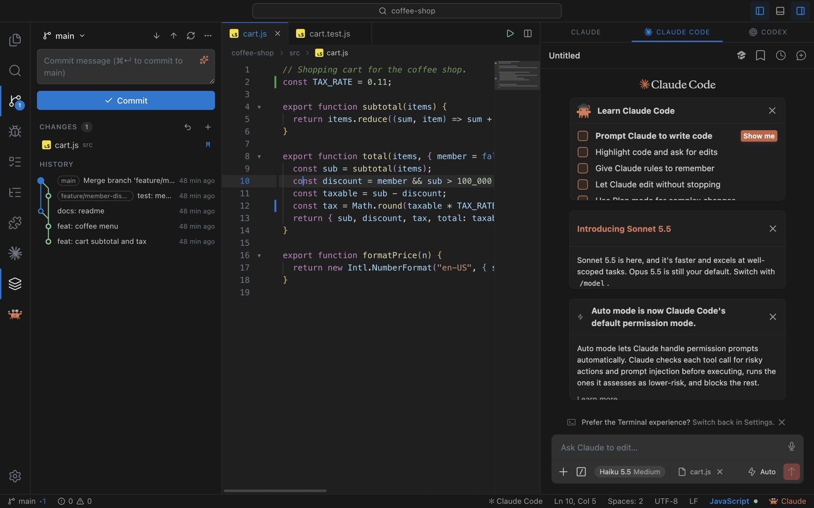

Review every change
Edits arrive as diff cards. Accept or reject per part, approve for the session, or send feedback. Shell commands ask first too.
Claude Code, Codex, Gemini, Cline and more inside a real IDE, with Git, a debugger and VS Code extensions. Every change an agent proposes waits for your approval.
macOS · Windows · Linux

Agents are powerful, but you stay in charge. Alexel Studio shows every edit and command first, keeps checkpoints, and gives you the full toolbox of a real editor.
Edits arrive as diff cards. Accept or reject per part, approve for the session, or send feedback. Shell commands ask first too.
Every message is a snapshot of your project. One click restores the files from before it; new files go to the Trash, not into oblivion.
Install from Open VSX. The official Claude Code and Codex extensions, Cline, Roo Code, Continue and Kilo get their own panels like in VS Code.
Stage a single change from the gutter, stash, merge, rebase, cherry-pick, tags, blame and a commit graph.
Language servers, a DAP debugger, real terminals, Smart Run, Emmet, multi-root workspaces, sticky scroll and pinned tabs.
No account, no telemetry, no proxy. Agents talk straight to their providers with your own subscription, and untrusted folders open in restricted mode.
Native terminals on macOS, Windows (ConPTY) and Linux, shortcuts that follow your OS, updates from inside the app, and English or Indonesian UI.
Alexel Studio is younger than VS Code. Here is where it leads and where it does not yet.
| Alexel Studio | VS Code + Copilot | Cursor | |
|---|---|---|---|
| Price | Free, MIT | $10–39 / month | $20+ / month |
| Use your own AI subscription | ✓ Claude, ChatGPT, Gemini | Partly | API keys |
| Per-change approval & checkpoints | ✓ | Partly | Partly |
| Telemetry | None | Yes (opt-out) | Yes |
| VS Code extensions | Open VSX, growing API | Full | Most |
| Remote SSH / containers | Not yet | ✓ | ✓ |
| Signed installers | Not yet | ✓ | ✓ |
Free for every platform. Downloads come straight from GitHub Releases.
64-bit, glibc 2.31 or later
sudo apt install ./Alexel-Studio-linux-amd64.debYes. Alexel Studio is open source under the MIT license. No account, no paid tier, no telemetry.
Only for the agent you want to use.
Not in the default mode.
Many do.
macOS 12 or later.